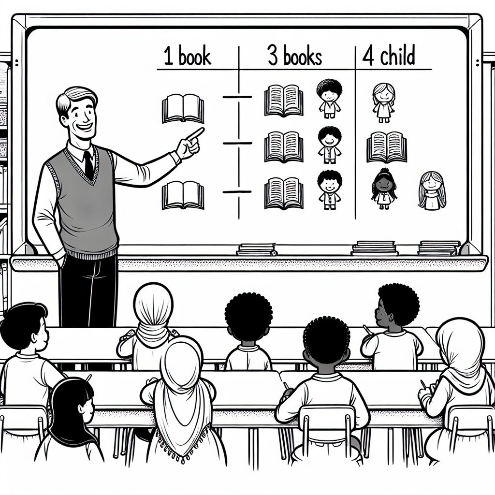
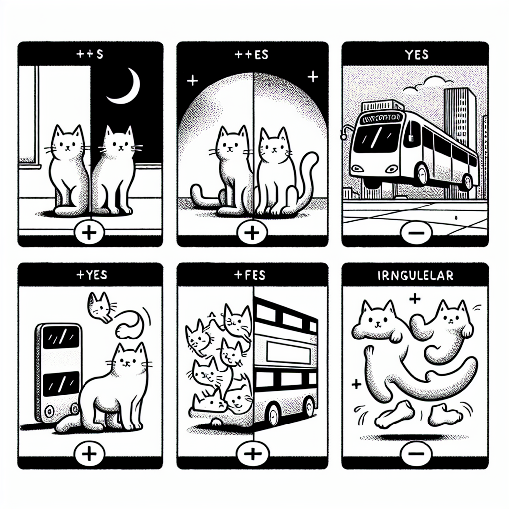
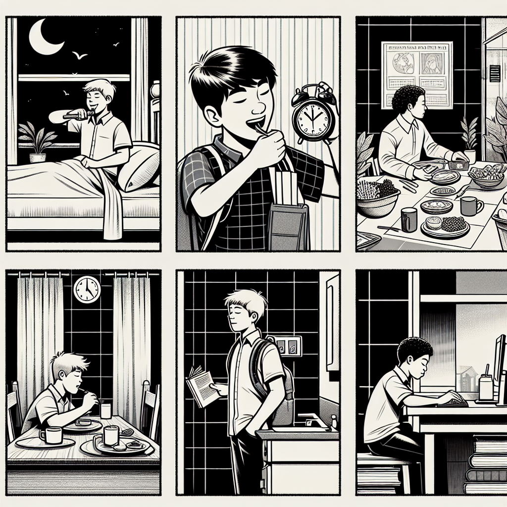
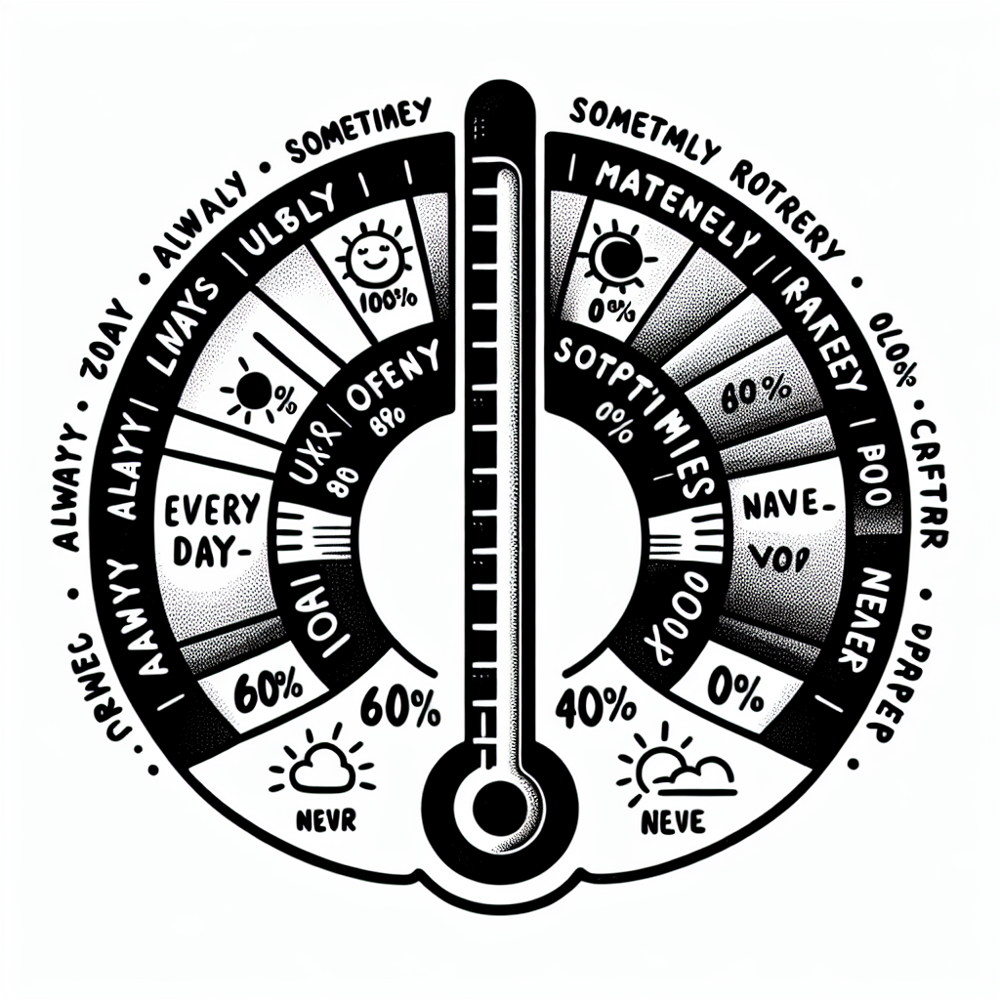
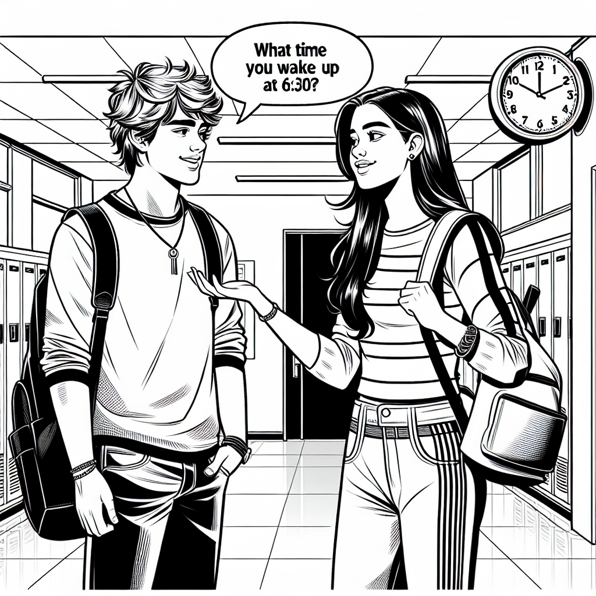

Plural & Simple Present
In this chapter you will learn how to form plural nouns in English and how to use the Simple Present tense to talk about habits, routines, and facts. By the end, you will be able to describe your daily life using correct verb forms and plural nouns.

Plural Nouns
In English, we add an ending to a noun to make it plural (more than one). The most common ending is -s, but there are some special rules.
| Rule | Singular | Plural |
|---|---|---|
| Most nouns: add -s | book, desk, pen | books, desks, pens |
| Nouns ending in -s, -sh, -ch, -x, -z: add -es | bus, dish, watch, box | buses, dishes, watches, boxes |
| Consonant + y: change y to i and add -es | city, family, story | cities, families, stories |
| Vowel + y: just add -s | day, boy, key | days, boys, keys |
| Nouns ending in -f / -fe: change to -ves | knife, leaf, life | knives, leaves, lives |
Some nouns do not follow the regular rules. You need to memorise these.
| Singular | Plural | Português |
|---|---|---|
| man | men | homem / homens |
| woman | women | mulher / mulheres |
| child | children | criança / crianças |
| person | people | pessoa / pessoas |
| tooth | teeth | dente / dentes |
| foot | feet | pé / pés |
| mouse | mice | rato / ratos |
| fish | fish | peixe / peixes |

Examples in Context
There are 30 students in my class.
Há 30 alunos na minha turma.
We take two buses to get to school.
Nós pegamos dois ônibus para chegar à escola.
There are many families in our neighbourhood.
Há muitas famílias no nosso bairro.
The leaves fall from the trees in autumn.
As folhas caem das árvores no outono.
The children play in the park after school.
As crianças brincam no parque depois da escola.
Common mistakes with plurals:
- Wrong irregular: "childs" → "children"
- Forgetting -es: "boxs" → "boxes"
- Wrong y rule: "citys" → "cities" (but "days" is correct — vowel + y)
Suggested time: 25 minutes
Warm-up: Point to objects in the classroom and ask students to give you the plural: "one pen, two...?" This gets them thinking about the rules before reading them.
L1 interference: In Portuguese, plurals are mostly formed by adding -s, so students may try to apply only that rule. Pay special attention to the -es, -ies, and irregular forms.
Write the plural form of each noun.
Select the correct plural form.
The plural of dish is:
b) dishesThe plural of story is:
c) storiesThe plural of woman is:
c) womenThe plural of life is:
b) livesThe plural of person is:
c) peopleSimple Present — Affirmative
We use the Simple Present to talk about habits, routines, facts, and things that are always true.
| Subject | Verb | Example |
|---|---|---|
| I / you / we / they | base form | I wake up at 6 a.m. |
| he / she / it | base form + -s | She wakes up at 7 a.m. |
Spelling rules for he / she / it:
- Most verbs: add -s → plays, reads, eats
- Verbs ending in -s, -sh, -ch, -x, -z, -o: add -es → goes, washes, watches
- Verbs ending in consonant + y: change y to i and add -es → study → studies
- Special: have → has
Daily Routine Verbs
| English | Português | He / She Form |
|---|---|---|
| wake up | acordar | wakes up |
| get up | levantar | gets up |
| take a shower | tomar banho | takes a shower |
| brush (teeth) | escovar (dentes) | brushes |
| have breakfast | tomar café da manhã | has breakfast |
| go to school | ir para a escola | goes to school |
| study | estudar | studies |
| have lunch | almoçar | has lunch |
| do homework | fazer lição de casa | does homework |
| watch TV | assistir TV | watches TV |
| play (sports/games) | jogar / brincar | plays |
| go to bed | ir dormir | goes to bed |

Examples in Context
I wake up at six o'clock every day.
Eu acordo às seis horas todos os dias.
We have lunch at the school cafeteria.
Nós almoçamos na cantina da escola.
She studies English every afternoon.
Ela estuda inglês toda tarde.
He goes to school by bus.
Ele vai para a escola de ônibus.
Water boils at 100 degrees Celsius.
A água ferve a 100 graus Celsius.
Common mistakes with the Simple Present:
- Forgetting the -s: "She study English" → "She studies English"
- Adding -s with I/you/we/they: "I plays football" → "I play football"
- Wrong have/has: "He have a dog" → "He has a dog"
Suggested time: 25 minutes
Activity: Ask students to describe their morning routine in pairs. One student says a sentence ("I wake up at 7"), and the partner reports it ("He/She wakes up at 7"). This practises the third-person -s naturally.
L1 interference: Portuguese does not add -s for third person, so students often forget this rule. Reinforce with repetition.
Write the correct form of the verb in brackets.
Simple Present — Negative & Questions
To make a negative sentence in the Simple Present, use do not (don't) or does not (doesn't) + the base form of the verb.
| Subject | Negative | Example |
|---|---|---|
| I / you / we / they | do not (don't) + base verb | I don't like coffee. |
| he / she / it | does not (doesn't) + base verb | She doesn't like coffee. |
Important: After doesn't, the verb returns to the base form (no -s).
- "She doesn't go" (NOT "She doesn't goes")
- "He doesn't have" (NOT "He doesn't has")
To make a question, put Do or Does at the beginning of the sentence. The verb stays in the base form.
| Question | Short Answer (Yes) | Short Answer (No) |
|---|---|---|
| Do you like football? | Yes, I do. | No, I don't. |
| Does she play tennis? | Yes, she does. | No, she doesn't. |
WH questions:
- What do you study? — I study English.
- Where does he live? — He lives in Belo Horizonte.
- When do they have lunch? — They have lunch at noon.
- What time does she wake up? — She wakes up at 7.
We often use frequency adverbs with the Simple Present to say how often something happens. They go before the main verb (but after the verb to be).
| Adverb | Frequency | Português |
|---|---|---|
| always | 100% | sempre |
| usually | ~80% | geralmente |
| often | ~60% | frequentemente |
| sometimes | ~40% | às vezes |
| rarely | ~10% | raramente |
| never | 0% | nunca |
I always brush my teeth before bed.
The adverb goes BEFORE the verb.
She is always late for class.
With "be", the adverb goes AFTER the verb.

Examples: Negative & Questions
I don't eat meat. I am vegetarian.
Eu não como carne. Eu sou vegetariano(a).
He doesn't live near the school.
Ele não mora perto da escola.
Do you like pizza? — Yes, I do.
Você gosta de pizza? — Sim.
Where does your father work?
Onde o seu pai trabalha?
We sometimes play volleyball after class.
Nós às vezes jogamos vôlei depois da aula.
After doesn't and Does, the verb always goes back to the base form — no -s, no -es, no -ies!
Suggested time: 30 minutes
Activity: Write 5 sentences on the board without frequency adverbs. Students must add an adverb that is true for them, then compare answers with a partner. This personalises the grammar and generates natural conversation.
Common error: Students often keep the -s after "doesn't" ("She doesn't goes"). Drill this correction repeatedly.
Rewrite each sentence in the negative form using don't or doesn't.
She likes coffee.
She doesn't like coffee.They play basketball on Saturdays.
They don't play basketball on Saturdays.I watch TV at night.
I don't watch TV at night.He goes to school by bus.
He doesn't go to school by bus.We have English class on Fridays.
We don't have English class on Fridays.Write a question for each answer using Do or Does.
Yes, I like chocolate.
Do you like chocolate?No, she doesn't study on Sundays.
Does she study on Sundays?Yes, they play football after school.
Do they play football after school?No, he doesn't live near the school.
Does he live near the school?Yes, we have homework every day.
Do you have homework every day?Rewrite each sentence with the frequency adverb in the correct position.
I eat breakfast before school. (always)
I always eat breakfast before school.She is late for class. (never)
She is never late for class.They play video games after dinner. (sometimes)
They sometimes play video games after dinner.He walks to school. (usually)
He usually walks to school.We are tired on Mondays. (often)
We are often tired on Mondays.Dialogue & Reading

Dialogue: Talking About Routines
Suggested time: 10 minutes
Activity: Have students read the dialogue in pairs. Then ask them to find all the frequency adverbs and underline them. Discuss the position of each adverb in the sentence.
Read the dialogue above and write T (True) or F (False).
Reading: My Daily Routine
My name is Rafael and I am 14 years old. I live in Belo Horizonte with my parents and my two sisters. We live in an apartment near the school.
I always wake up at six thirty. I take a shower and brush my teeth. Then I have breakfast with my family. We usually eat bread with butter and drink juice. My sisters don't like juice — they prefer milk.
I go to school on foot because it is very close. Classes start at seven thirty. I have six classes every day. My favourite subjects are English and Science. I don't like Maths very much, but my sister Carla loves it. She always helps me with my Maths homework.
After school, I usually have lunch at home. In the afternoon, I sometimes play football with my friends in the park. On Tuesdays and Thursdays, I have English classes at Escola Incluir. I really enjoy those classes!
In the evening, I do my homework and watch TV. I never go to bed late — I usually go to bed at nine thirty because I wake up very early.
Suggested time: 20 minutes (reading + exercises 8-9)
Pre-reading: Ask students what they think a typical Brazilian teenager's routine looks like. Write key vocabulary on the board.
Reading strategy: First reading for general understanding, second reading to find specific details for the exercises.
Read the text about Rafael and answer the questions in complete sentences.
Where does Rafael live?
He lives in Belo Horizonte. / He lives in an apartment near the school.What does Rafael's family usually have for breakfast?
They usually eat bread with butter and drink juice.How does Rafael go to school?
He goes to school on foot. / He walks to school.What are Rafael's favourite subjects?
His favourite subjects are English and Science.Who helps Rafael with his Maths homework?
His sister Carla helps him.What time does Rafael go to bed?
He usually goes to bed at nine thirty.Complete each sentence about Rafael using the correct verb form.
Writing & Speaking
Match the beginning of each sentence (1-6) with the correct ending (a-f).
Write a short paragraph (6-8 sentences) about your daily routine. Use the Simple Present tense and at least 3 frequency adverbs.
Include:
- What time you wake up
- How you go to school
- What you do after school
- What you do in the evening
- What time you go to bed
Use Rafael's text as a model. Start with "I usually wake up at..." and use words like always, usually, sometimes, and never.
Ask a classmate these questions and write their answers. Then report to the class using he/she.
What time do you wake up?
How do you go to school?
What do you usually have for breakfast?
What is your favourite subject?
What do you do after school?
Do you play any sports? Which one(s)?
Suggested time: 25 minutes (15 for writing, 10 for interview)
Assessment criteria for Exercise 11:
- Correct use of Simple Present (base form vs. -s/-es/-ies)
- At least 3 frequency adverbs in correct position
- Daily routine vocabulary from this chapter
- Clear paragraph structure (6-8 sentences)
Exercise 12: After the interview, each student reports to the class using he/she forms: "Ana wakes up at 7. She goes to school by bus. She usually has bread for breakfast." This is excellent practice for the third-person -s rule.
Chapter 3 - Answer Key
Exercise 1: Write the Plural
Exercise 2: Choose the Correct Plural
Exercise 3: Complete with the Correct Verb Form
Exercise 4: Make the Sentence Negative
Exercise 5: Write Questions
Exercise 6: Add the Frequency Adverb
Exercise 7: True or False
Exercise 8: Answer the Questions
Exercise 9: Complete About Rafael
Exercise 10: Match the Sentence Halves
Exercise 11: Write About Your Daily Routine
Answers will vary. Check for correct use of Simple Present (base form for I/you/we/they, -s/-es/-ies for he/she/it), at least 3 frequency adverbs in the correct position, daily routine vocabulary, and 6-8 complete sentences.
Exercise 12: Interview a Classmate
Answers will vary. Check that students answered in complete sentences using the Simple Present correctly. When reporting, verify correct use of third-person forms (wakes up, goes, has, etc.).